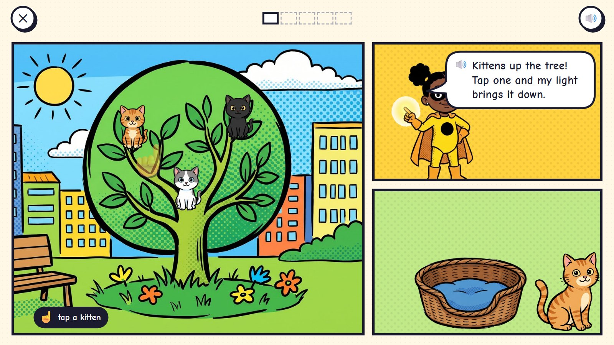
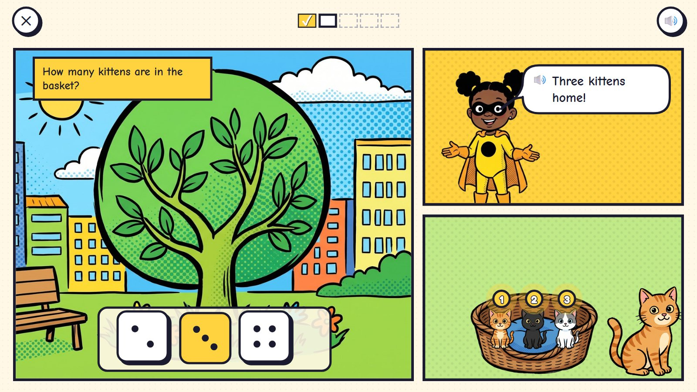
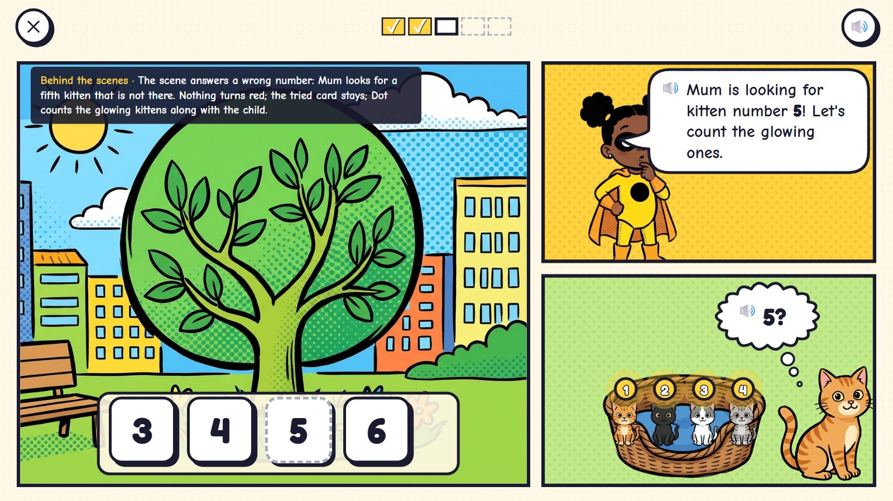
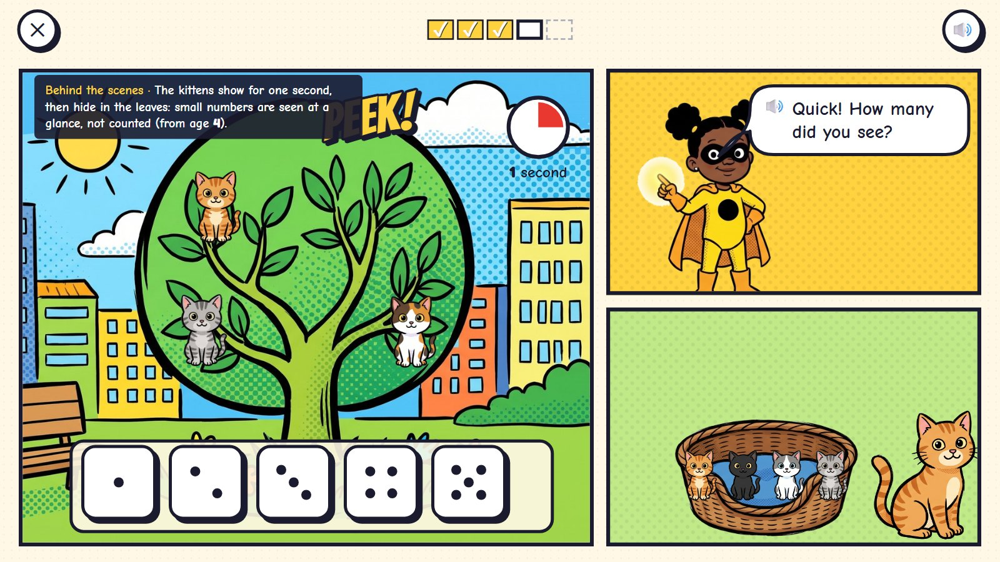
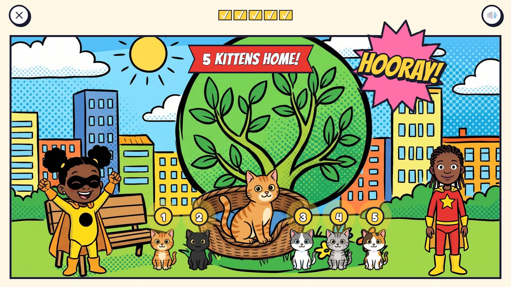

Kitten Rescue
Kittens are stuck up a tree. The page has three panels: the tree, Dot, and the basket where Mum cat waits. Each tap on a kitten lights it up with its number, and it floats across the white gutter into the basket's panel. When they are all home, the child says how many. A lit kitten cannot be counted twice, so counting each thing once is built into the play.
Pre-K–K · ages 3–5 hero: Dot panel power: tap to light up and count; things cross the gutter
The maths: Count things one by one; know that the last number counted tells how many; count out a number; see small numbers at a glance. One activity is five rounds, about two minutes. Everything works with one finger or a mouse.
🎉 The fun
Dot's light makes every kitten glow with its number, and it floats down across the gutter with a TING into its basket.
🎥 The view
Fixed: three panels on one page (the tree, Dot, the basket); the finale opens into one big panel.
🎆 The finale
The page turns into one big panel: every kitten home with its number, Dot and the child's hero cheering (3 seconds).
Six moments

1Kittens up the tree
Three kittens in the tree panel. Dot in her panel. An empty basket and Mum cat in the third. A see-through hand taps one kitten, once.
🔊 Kittens up the tree! Tap one and my light brings it down.
Three panels on one page. Things move between panels by crossing the white gutter.

2One!
The tapped kitten lights up with its number and floats across the gutter into the basket's panel.
🔊 One!
A lit kitten cannot be tapped again, so nothing is counted twice.

3How many?
All three are home, numbered 1, 2, 3. The child taps the card with three dots.
🔊 Three kittens home!
For 3-year-olds the answers are dot cards. The last number counted tells how many.

4A wrong try
Age 4: four kittens are home, but the child tapped 5. Mum cat looks around for a fifth kitten that is not there.
🔊 Mum is looking for kitten number 5! Let's count the glowing ones.
The scene answers the wrong number. Nothing turns red; the tried card stays; Dot counts along with the child.

5A quick look
Ages 4–5: three kittens peep out of the leaves for one second, then hide. How many?
🔊 Quick! How many did you see?
Small numbers are seen at a glance, not counted.

6All home
The page turns into one big panel: five kittens home with their numbers.
🔊 Five kittens home! Hooray!
Mock-ups: Gemini's comic pictures (scenes, heroes, things) with the maths drawn by code in the same inked look, the way the app would draw it, so every count, clock and colour is exact.
What is asked, for one age
- Three kittens: tap each one down. How many?
- Five kittens
- A quick look: three kittens peep out of the leaves for one second, then hide
- Two kittens already home, three in the tree: how many altogether?
- Bring down 4 (six are up there): count out a number and stop
One activity card. The same activity serves other ages with other numbers:
| Age | What changes |
|---|---|
| 3 | Up to 5. Answers are dot cards, so no numerals are needed. One kitten moves at a time. |
| 4 | Up to 10, with numerals on the cards. Quick looks up to 4. "Bring down 4" when more are up there. |
| 5 | Up to 20: a basket holds ten, so 13 is a full basket and 3 more. Quick looks up to 5. |
Wrong answers we expect, and what happens
| Mistake | Looks like | What happens (never red, never "wrong") |
|---|---|---|
| Counting one twice | says 4 for three kittens | each kitten lights once; a lit kitten cannot be tapped again |
| Skipping one | a kitten is left in the tree | it waits in the tree; Dot points her light at it |
| Counting again instead of answering | counts the basket again from 1 | "The last number you said tells how many!" |
| One too many | brings down 5 when asked for 4 | Mum cat counts the basket aloud; the child taps the extra kitten to send it back for its nap |
What it needs
- The park with its big tree, drawn once
- Seven kittens, Mum cat and the basket (cut-outs)
- Dot in four poses
- The glow and the number badges drawn by code
- Voice: counting to 20, praise, tips
Test robot: Reads how many kittens the question has, taps each once, checks each landed in the basket's panel with the right number, answers, and once a session taps a kitten twice to check it is counted once.
One question
← Back to Comic City · Kitten Rescue · Missing Pieces · Rooftop Hops · Clock Tower · Echo's Copies · Colour Lab · Sticker Pack